library(tidyverse)31 Homework: Point Estimation for Complex Summaries
$$ \newcommand{X}{} \newcommand{Y}{}
$$
Summary
This one is about point estimation for estimation targets that are complex summaries of a population. We’ll focus on the summaries we discussed in our lecture on Multivariate Analysis and Covariate Shift.
Because coverage calculations involve a fair amount of code and just calculating these estimators involves some too, this is a pretty code-heavy assignment. And when you’re new to that kind of programming, it can feel really overwhelming trying to get two pieces like this to fit together. Organizing your code well really helps. Unfortunately, some of the organizational principles you may have learned in other programming class — e.g. the kind of Object Oriented Programming where all the examples are about bank accounts — tend to be counterproductive for this kind of work. In my experience, the best way to organize your code when you’re doing something like this is to make it look as much like the math as you can. I’ll demonstrate that for you by doing versions of a lot of the same calculations I’m asking you to do.
Please don’t hesitate to reach out if you’re having trouble with any part of this. Learning new programming styles and new mathematical ideas at the same time can be a lot. And Google and ChatGPT may not be as helpful as you’d like. There’s a lot of content on the web about this programming style and these mathematical ideas, but there’s not much that talks about both at the same time.
We’ll use the tidyverse package.
Review
Let’s review the summaries we’ll be working with. We’ll stick with the same California income data we’ve used in lecture. Here are plots to think about while we review.


Consider the population \((w_1,x_1,y_1), \ldots, (w_m,x_m,y_m)\) you see above on the right. To summarize it, we might talk about mean \(\mu(w,x)\) in each column, the number of dots \(m_{wx}\) in each column, and the number of red (w=0) and green (w=1) dots \(m_w\) outright. That is, the mean income among people with a given education level and sex, the number of people with a given education level and sex, and the number of male and female people in our sample respectively. In mathematical notation, these. \[ \begin{aligned} \mu(w,x)&=\frac{1}{m_{wx}}\sum_{j:w_j=w,x_j=x} y_j && \text{ column means } \\ m_{wx} &= \sum_{j:w_j=w,x_j=x} 1 && \text{number of dots in column} \\ m_w &= \sum_{j:w_j=w} 1 && \text{total number of red (w=0) or green (w=1) dots} \end{aligned} \] In the plot, we see these means \(\mu(w,x)\) represented as pointranges (⍿) and the proportion of people of a given sex with a given level of education, \(m_{wx}/m_w\), represented by the heights of red and green bars.1
In terms of these, we can summarize the income disparity between the male and female people in our population a few pretty reasonable ways. We call the first one below the raw difference in means and the remaining three, which are all weighted averages of the within-education-level means \(\mu(1,x)-\mu(0,x)\), differences that are adjusted for education level. \[ \begin{aligned} \Delta_{\text{raw}} &= \frac{1}{m_1}\sum_{j:w_j=1} y_j - \frac{1}{m_0}\sum_{j:w_j=0} y_j \\ \Delta_0 &=\frac{1}{m_0}\sum_{j:w_j=0} \qty{\mu(1,x_j) - \mu(0, x_j)} \\ \Delta_1 &= \frac{1}{m_1}\sum_{j:w_j=1} \qty{\mu(1,x_j) - \mu(0, x_j)} \\ \Delta_{\text{all}} &= \frac{1}{m}\sum_{j=1}^m \qty{\mu(1,x_j) - \mu(0, x_j)} \end{aligned} \]
To estimate them, we can do exactly the same thing with the sample. Letting \(\hat\mu\), \(N_{wx}\), and \(N_w\) be sample versions of \(\mu\), \(m_{wx}\), and \(m_w\), we can calculate our estimators like this.
\[
\begin{aligned}
\hat \Delta_{\text{raw}} &= \frac{1}{N_1}\sum_{i: W_i=1} Y_i - \frac{1}{N_0}\sum_{i: W_i=0} Y_i \\
\hat \Delta_0 &=\frac{1}{N_0}\sum_{i: W_i=0} \qty{\hat\mu(1,X_i) - \hat \mu(0, X_i)} \\
\hat \Delta_1 &= \frac{1}{N_1}\sum_{i: W_i=1} \qty{\hat\mu(1,X_i) - \hat \mu(0, X_i)} \\
\hat \Delta_{\text{all}} &= \frac{1}{n} \sum_{i=1}^n \qty{\hat\mu(1,X_i) - \hat \mu(0, X_i)}
\end{aligned}
\]
As discussed in our lecture on Least Squares in Linear Models, the column means in the sample are really just one estimate of the mean of the corresponding column in the population. We can estimate our adjusted differences by plugging any estimate \(\hat\mu\) of the function \(\mu\) into the formulas above. The column means are the least squares estimate in the ‘all functions’ regression model, i.e., \[ \begin{aligned} \hat\mu(w,x) = \frac{1}{N_{wx}} \sum_{i:W_i=w,X_i=x} Y_i \qqtext{ minimizes } & \frac{1}{n}\sum_{i=1}^n \qty{ Y_i - m(W_i,X_i) }^2 \\ &\qqtext{ over the set of all functions $m(w,x)$}. \end{aligned} \] We get other estimates \(\hat\mu\) by minimizing the sum of squared errors over other (smaller) sets of functions of \(w\) and \(x\). For example, the ones discussed here in that lecture. In this assignment, we’ll hold off on that until our last exercise.
Estimation
We’re going to work with the same California income data we used in our last homework. But this time, instead of doing everything by hand using summaries and tables, we’ll write code that works with the raw data. You can get it like this.
ca = read.csv('https://qtm285-1.github.io/assets/data/ca-income.csv')
sam = data.frame(
w = ca$sex == 'female',
x = ca$education,
y = ca$income)We’ll use some tidyverse stuff in the calculations below.
library(tidyverse)Calculating Point Estimates
As a warm-up, we’ll repeat Exercise 5 from our last homework. We’ll calculate the following four summaries of the income discrepency between male and female residents of California. \[ \begin{aligned} \hat \Delta_{\text{raw}} &= \frac{1}{N_1}\sum_{i: W_i=1} Y_i - \frac{1}{N_0}\sum_{i: W_i=0} Y_i \\ \hat \Delta_0 &=\frac{1}{N_0}\sum_{i: W_i=0} \qty{\hat\mu(1,X_i) - \hat \mu(0, X_i)} \\ \hat \Delta_1 &= \frac{1}{N_1}\sum_{i: W_i=1} \qty{\hat\mu(1,X_i) - \hat \mu(0, X_i)} \\ \hat \Delta_{\text{all}} &= \frac{1}{n} \sum_{i=1}^n \qty{\hat\mu(1,X_i) - \hat \mu(0, X_i)} \end{aligned} \] But, instead of doing it by hand using a table, we’ll do it with code. We’ll calculate each three ways.
- Using code that looks like the formulas above, i.e., code that sums over people.
- With code that looks like the equivalent ‘histogram form’ formulas. You needed these for last week’s Exercise 5.
- With code that looks like the ‘general form’, \(\sum_{w,x} \hat\alpha(w,x) \hat\mu(w,x)\), that we talked about in our lecture on inference for complex summaries.
Ultimately, we don’t really need three implementations of the same thing. We could get by with just the ‘general form’ code. We can use it to calculate point estimates and it’s what we’ll ultimately need to do variance calculations. If you like, you can think of the other two as steps along the way.
I’ll get you started by doing \(\hat\Delta_{\text{raw}}\) and \(\hat\Delta_1\). I like to write code that looks almost exactly like what I’ve written in mathematical notation. From what I’ve seen, when people do that, they tend to introduce fewer bugs when they go from math to code. And the code tends to be easier to understand, too.
I’ll start by defining three functions: \(\hat\mu(w,x)\), \(\hat\sigma(w,x)\), and \(N_{w,x}\). Everything else I need, e.g. the histogram height \(P_{x \mid 1}(x)\) that appears in the equivalent ‘histogram form’ expression for \(\hat\Delta_1\), can be computed from these.
summaries = sam |>
group_by(w,x) |>
summarize(muhat = mean(y), sigmahat = sd(y), Nwx = n(), .groups='drop')
summary.lookup = function(column.name, summaries, default=NA) {
function(w,x) {
out = left_join(data.frame(w=w,x=x),
summaries[, c('w','x',column.name)],
by=c('w','x')) |>
pull(column.name)
out[is.na(out)] = default
out
}
}
muhat = summary.lookup('muhat', summaries)
sigmahat = summary.lookup('sigmahat', summaries)
Nwx = summary.lookup('Nwx', summaries)
W = sam$w
X = sam$x
Y = sam$y
x = unique(X)
n = length(Y)- 1
-
If you’re unfamiliar with code that looks like this, it helps to think about the types of
summary.lookup‘s input and output. The input is the easy part. Its arguments as a column name and a data frame—one that should have columns named ’w’, ‘x’, and column.name. Its output is a function. It’s a function that takes as input two vectors of the same length—a vector of values for ‘w’ and a vector of values for ‘x’—and returns the corresponding values from the column.name column of the data frame. This basic pattern—writing functions that return other functions—is a big part of what makes functional programming effective in the right hands. - 2
-
What we’re doing here is taking each row in the table
data.frame(w=w,x=x)and adding to it a columncolumn.namewith values taken from the data framesummarieswhere the ‘w’ and ‘x’ match. If there is no row insummariescorresponding to some pair ‘w’ and ‘x’ we’ve asked for—i.e. some row indata.frame(w=w,x=x)—this putsNAin that column. - 3
-
If
defaultis passed, then we returndefaultinstead ofNAfor any row indata.frame(w=w,x=x)that doesn’t have a corresponding row insummaries.
This is everything I need to do calculations that look like the formulas above.
Deltahat.raw = mean(Y[W==1]) - mean(Y[W==0])
Deltahat.1 = mean(muhat(1,X[W==1]) - muhat(0,X[W==1]))To do calculations that look like the ‘histogram form’ formulas, I need \(P_{x \mid 0}\) (Px.0 in the code below), \(P_{x \mid 1}\) (Px.1 in the code below), and \(P_x\) (Px in the code below). I can define these in terms of the function \(N_{w,x}\) implemented above.
Nw = function(w) { sum(Nwx(w, x)) }
Px.1 = function(x) { Nwx(1,x)/Nw(1) }
Px.0 = function(x) { Nwx(0,x)/Nw(0) }
Px = function(x) { (Nwx(0,x)+Nwx(1,x)) / n }Here’s how I calculate \(\hat\Delta_{\text{raw}}\) and \(\hat\Delta_1\) using the ‘histogram form’ formulas.
Deltahat.raw.histform = sum(Px.1(x)*muhat(1,x)) - sum(Px.0(x)*muhat(0,x))
Deltahat.1.histform = sum(Px.1(x)*(muhat(1,x) - muhat(0,x)))To do calculations that look like the ‘general form’, \(\sum_{w,x} \hat\alpha(w,x) \hat\mu(w,x)\), I need two new things. First, I need a function \(\hat\alpha(w,x)\) for each estimation target. I’ll start by writing them out in mathematical notation. To do this, I take a look at the ‘histogram form’ formulas and pull out the coefficients on each instance of \(\hat\mu(w,x)\).
$$ \[\begin{aligned} \hat\Delta_\text{raw} &= \sum_{x} P_{x \mid 1}(x) \ \hat\mu(1,x) - \sum_{x} P_{x \mid 0} \ \hat\mu(0,x) \\ &= \sum_{w,x} \hat\alpha_\text{raw}(w,x) \ \hat\mu(w,x) \qfor \begin{cases} \hat\alpha_\text{raw}(w,x) = P_{x \mid 1}(x) & \text{if } w=1 \\ \hat\alpha_\text{raw}(w,x) = -P_{x \mid 0}(x) & \text{if } w=0 \end{cases} \\ \hat\Delta_1 &= \sum_{x} P_{x \mid 1}(x) \qty{ \hat\mu(1,x) -\hat\mu(0,x)} \\ &= \sum_{w,x} \hat\alpha_1(w,x) \ \hat\mu(w,x) \qfor \begin{cases} \hat\alpha_1(w,x) = P_{x \mid 1}(x) & \text{if } w=1 \\ \hat\alpha_1(w,x) = -P_{x \mid 1}(x) & \text{if } w=0 \end{cases} \end{aligned}\]$$
Now, having done this, I can implement functions that look like that in R.
alphahat.raw = function(w,x) { ifelse(w==1, Px.1(x), -Px.0(x)) }
alphahat.1 = function(w,x) { ifelse(w==1, Px.1(x), -Px.1(x)) } Now that I have these, I can calculate \(\hat\Delta_\text{raw}\) and \(\hat\Delta_1\) by plugging them into the function general.form.estimate defined below, which sums the product \(\hat\alpha(w,x) \hat\mu(w,x)\) over all pairs \((w,x)\).
general.form.estimate = function(alphahat, muhat, w, x) {
grid = expand_grid(w=w, x=x)
ww = grid$w
xx = grid$x
sum(alphahat(ww,xx)*muhat(ww,xx))
}
Deltahat.raw.generalform = general.form.estimate(alphahat.raw, muhat, w=c(0,1), x=x)
Deltahat.1.generalform = general.form.estimate(alphahat.1, muhat, w=c(0,1), x=x) - 1
- This is reusable. Just make sure you pass all levels of \(w\) and \(x\) to the function.
And to check for mistakes, we can look to see if all three methods give the same answer.2
c(Deltahat.raw, Deltahat.raw.histform, Deltahat.raw.generalform)[1] -11824.38 -11824.38 -11824.38c(Deltahat.1, Deltahat.1.histform, Deltahat.1.generalform)[1] -15092.87 -15092.87 -15092.87Now it’s your turn.
Solution
Locked (Week 9)
The total number of red and green dots, \(m_w\), on the other hand, isn’t very visible in the plot. You’d actually have to count dots.↩︎
If you see a tiny difference, like \(10^{-10}\) or so, don’t worry about it. Computer arithmetic is imperfect, so those happen when you use different mathematically equivalent formulas.↩︎